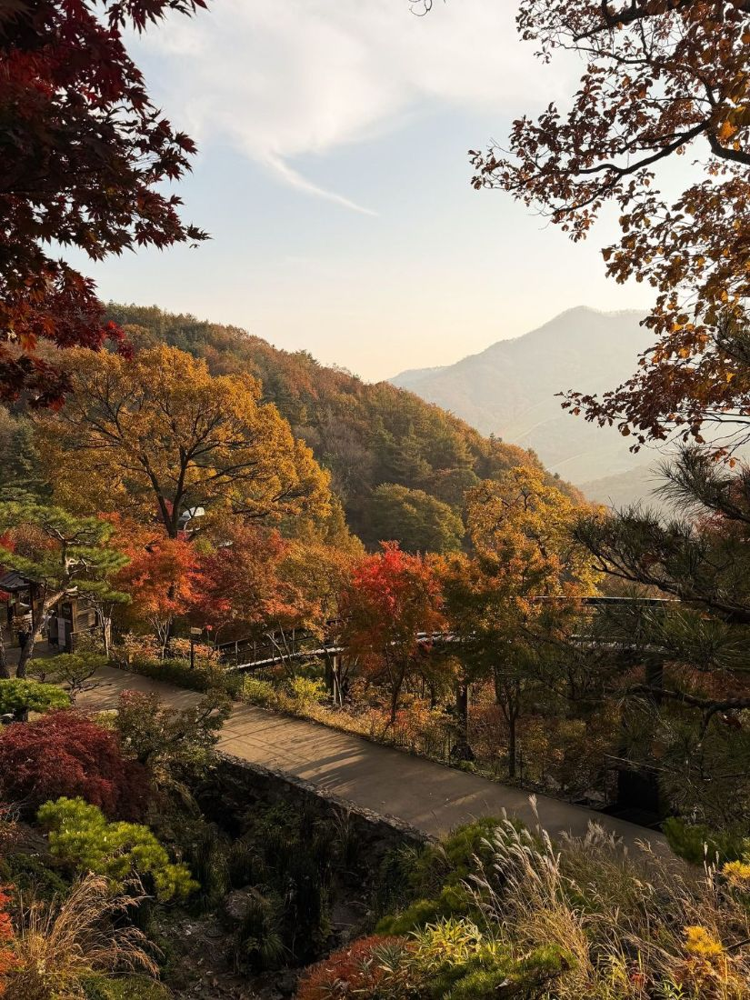
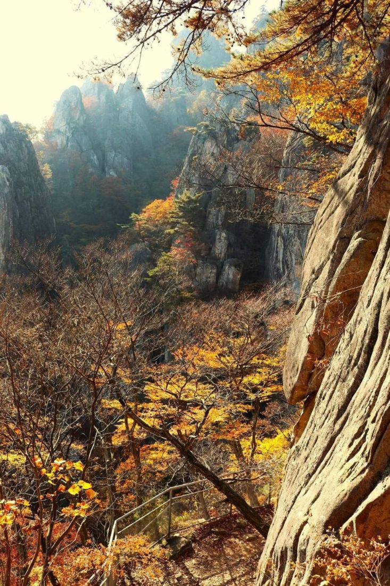
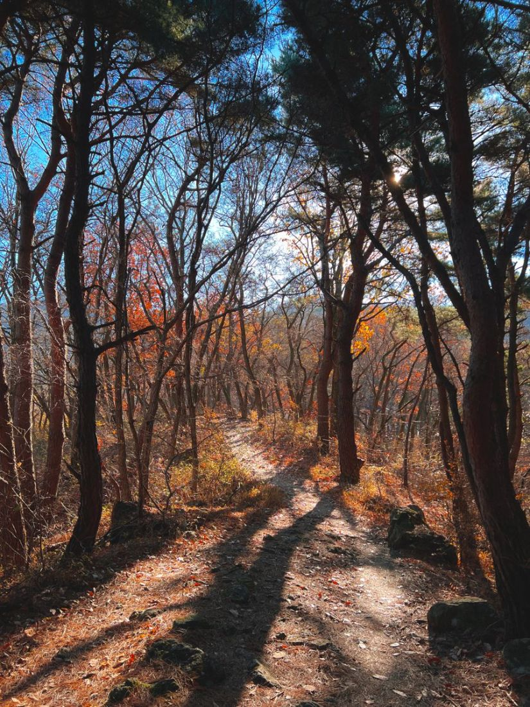
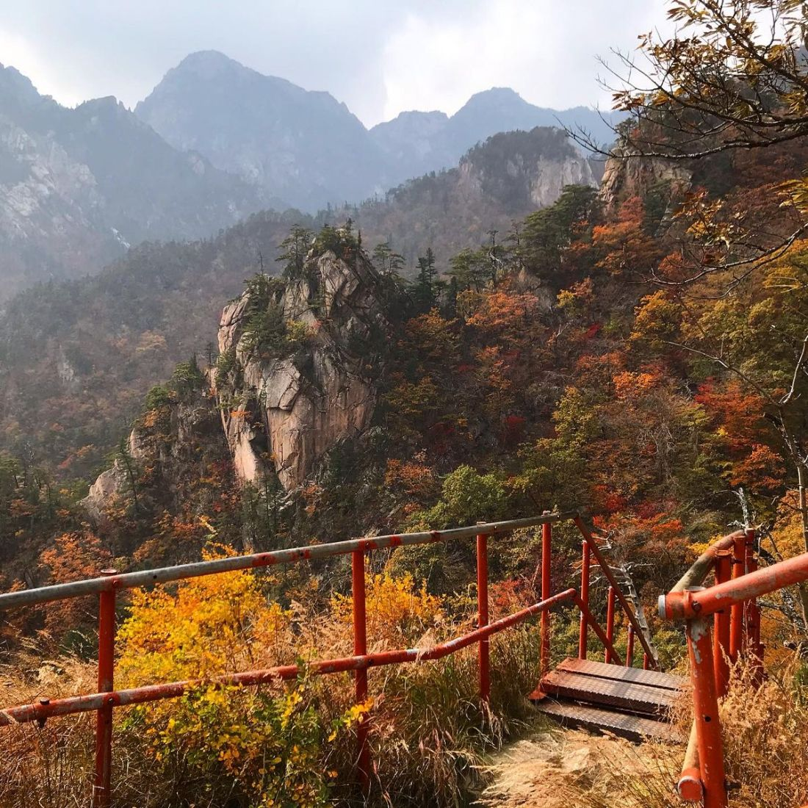
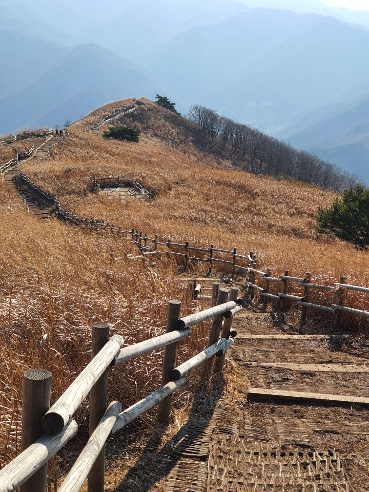
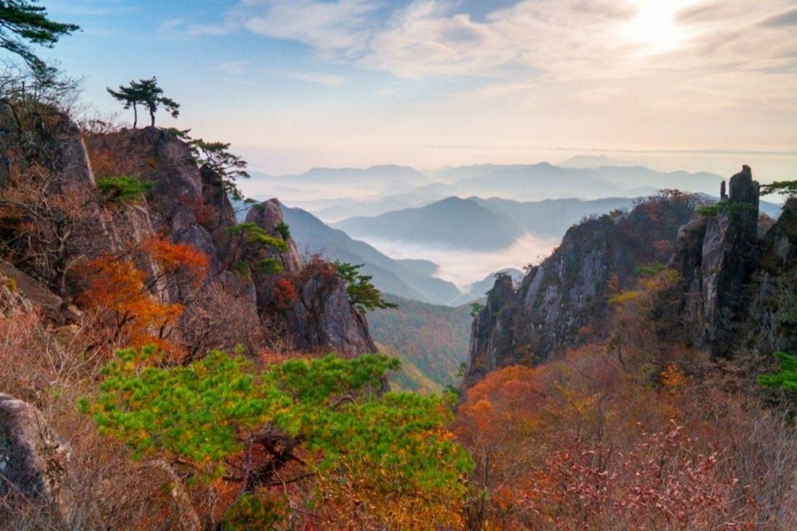
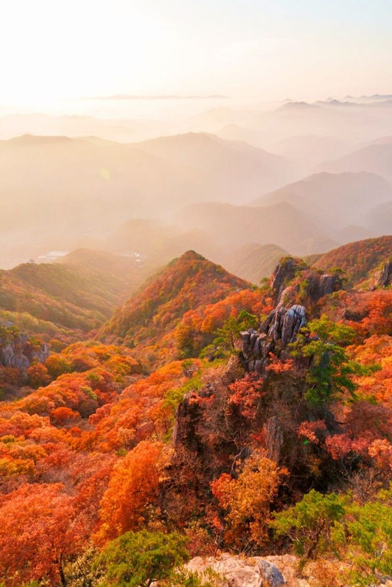
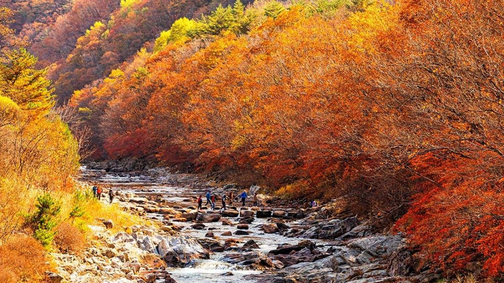

59.9 km
코스
코스 여덟 개의 거리와 오르막, 고도 단면을 같은 축척으로 비교합니다.
여덟 코스 모두
-
1싸리골 계곡길
쉬움싸리골 입구 싸리골 대피소
- 거리
- 4.4 km
- 오르막
- 104 m
- 내리막
- 1 m
- 오를 때
- 1시간 30분
- 반대 방향
- 1시간 20분
- 최고
- 443 m
계곡을 따라 걷는 길로, 오르막이 거의 없고 목교 네 곳을 건넌다.

-
2물푸레 계곡길
쉬움물푸레 입구 물푸레 대피소
- 거리
- 3.6 km
- 오르막
- 343 m
- 내리막
- 0 m
- 오를 때
- 1시간 45분
- 반대 방향
- 1시간 20분
- 최고
- 683 m
물푸레골 계곡 오른쪽 사면을 따라 오른다. 마지막 1 km에 돌계단이 있다.

-
3물푸레골 코스
보통물푸레 입구 너덜재 대피소
- 거리
- 6.8 km
- 오르막
- 948 m
- 내리막
- 5 m
- 오를 때
- 3시간 50분
- 반대 방향
- 2시간 55분
- 최고
- 1,284 m
물푸레 대피소를 지나 너덜지대 가장자리로 주능선 너덜재에 오른다.

-
4서봉 코스
보통서촌 입구 서봉
- 거리
- 6.4 km
- 오르막
- 1,011 m
- 내리막
- 0 m
- 오를 때
- 3시간 50분
- 반대 방향
- 2시간 50분
- 최고
- 1,554 m
남서 지능선을 곧장 오른다. 해발 1,300 m 위로 바위 구간과 난간이 이어진다.

-
5주능선 코스
어려움서봉 동봉
- 거리
- 12.7 km
- 오르막
- 657 m
- 내리막
- 691 m
- 오를 때
- 5시간 40분
- 반대 방향
- 5시간 40분
- 최고
- 1,696 m
서봉에서 동봉까지 주능선을 잇는다. 대피소 네 곳을 지나므로 1박 2일로 나누어 걷는 경우가 많다.

-
6동봉 코스
어려움동촌 입구 동봉
- 거리
- 9.0 km
- 오르막
- 1,122 m
- 내리막
- 1 m
- 오를 때
- 4시간 50분
- 반대 방향
- 3시간 40분
- 최고
- 1,520 m
동봉 남쪽 지능선을 오른다. 경사가 고르고 그늘이 많다.

-
7남릉 코스
매우 어려움남릉 입구 잣두루봉
- 거리
- 8.8 km
- 오르막
- 1,225 m
- 내리막
- 2 m
- 오를 때
- 4시간 55분
- 반대 방향
- 3시간 45분
- 최고
- 1,696 m
잣두루봉 남쪽 지능선을 오르는 길로, 전망이 트여 있으나 해발 1,100 m 위로는 바람을 그대로 맞는다.

-
8싸리골 코스
매우 어려움싸리골 입구 잣두루봉
- 거리
- 8.2 km
- 오르막
- 1,357 m
- 내리막
- 1 m
- 오를 때
- 5시간 05분
- 반대 방향
- 3시간 40분
- 최고
- 1,696 m
싸리골 대피소부터 잣두루봉까지 3.8 km 동안 1,250 m를 올라 여덟 코스 가운데 가장 가파르다.

조건에 맞는 코스가 없다.
난이도와 시간 계산
난이도는 거리(km)에 오르막(m)을 100으로 나눈 값을 더한 점수로 나눈다. 10 미만은 쉬움, 17 미만은 보통, 21 미만은 어려움, 그 이상은 매우 어려움이다.
소요 시간은 거리를 시속 3.5 km로 걷는 시간에 오르막 500 m마다 1시간, 내리막 1,000 m마다 1시간을 더한 값이다. 쉬는 시간과 식사 시간은 넣지 않았으므로 실제로는 1~2시간 더 걸린다.
모든 단면은 가로 13 km, 세로 해발 300~1,800 m의 같은 축척으로 그렸다. 그래서 단면의 길이와 기울기를 그대로 견주어 볼 수 있다.